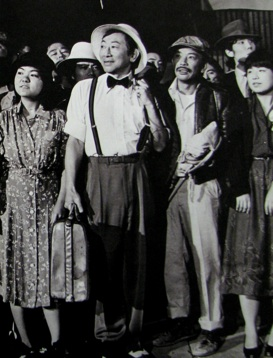

Presentations: Pauline Stakelon

Founded in 1970, Visual Communications is an organization serving the Asian Pacific community through the creation, distribution, and exhibition of visual media created by and for Asian-Americans. Operating on the periphery of the Hollywood filmmaking industry and influenced by late 1960s counter-culture movements, the group’s ideologies developed partially as a reaction to their exclusion from the industry and misrepresentation in popular media more generally. However, Visual Communications’ growth is also inextricably linked to the historical transformations of Little Tokyo in Downtown Los Angeles. In this presentation, I will explore the organization’s link to its local site. Specifically, I will look at how the Little Tokyo Redevelopment Project, initiated the same year that VC was founded and continuing through the 1980s, influenced Visual Communications’ media output. The redevelopment project threatened to displace many long-time residence of the community and undoubtedly evoked memories of the internment of Japanese-Americans during WWII. The redevelopment project also provides the narrative structure in the Visual Communications production Hito Hata: Raise the Banner (1980), ostensibly the first feature-length narrative film produced by Asian-Americans. In this film, a Little Tokyo resident faces eviction, remembering his past struggles as an immigrant through flashbacks. By exploring this film in the context of the local events taking place during its production, I will highlight the importance of Visual Communications’ local specificity in Los Angeles’ Little Tokyo.
Pauline Stakelon works as the Digital Media and Copyright Strategist at the UCLA Film & Television Archive, where she is involved with a number of the Archive’s digital initiatives. She served as the Associate Producer on the Archive's recent release of the television series, The Goldbergs, DVD set. She also works on the digital restoration of films and classic TV shows and manages the Archive’s video digitization and website redesign projects.
Pauline is a Ph.D. candidate at Film and Media Studies at UC Santa Barbara. She is interested in media history, technology, copyright regulations, and moving image archives and is currently writing her dissertation about how emerging forms of media technology have developed in relation to copyright law. Select publications include: “Travel Through the Stereoscope” (Media History, December 2010); “A Case for Imperfection: Confessions of a Digital Restoration Artist” (Flow TV, May, 2010); and “A Sound that Never Sounded: Historical Constructions of Sound Fidelity” (Convergences, August, 2009).
International Identities and Local Influence: The Development of Visual Communications
This presentation is part of the panel entitled Blurred Boundaries: Outsider/Insider Filmmaking and Group Identities, being held on Saturday November 13, 2010 4:00pm - 6:30pm in the Eileen Norris Cinema Theatre.
Left: Hito Hata: Raise the Banner (1980) by Robert Nakamura and Duane Kubo
Image courtesy of Visual Communications
